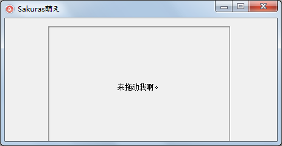

篡改消息什么的最开心了！！
咳咳咳，有时候呢，我们需要制作一个可以在Form里自由被拖动的panel，那么我们可以通过如下的方法来实现。
先介绍下WM_NCHITTEST消息，在鼠标点击到panel上的时候，系统会向panel发出这个消息，用以询问鼠标究竟点在了它的什么地方，从而执行不同的命令。
一般来说是点击在HTClient（客户区）上了，但是我们可以悄悄的改一下，骗系统说点在了HTCaption（标题区）上了。这样系统就会乖乖的把panel置为拖动状态，接下来就跟着鼠标动了。
写了个小例子，它看起来是这样的。

MiscellaneaSourceCode2/Unit1.pas
第10行，定义自己panel类，从TPanel继承。
第12行，截获WM_NCHITTEST消息。
第41行，当鼠标点击在rect（0,0,panel.width,50）的范围内是，骗系统说是点在了标题栏上。（别和我说你看不懂rect）
第51行，动态生成我们的panel。
第62行，自己Create要自己Free。